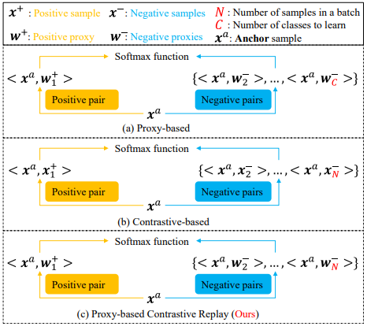
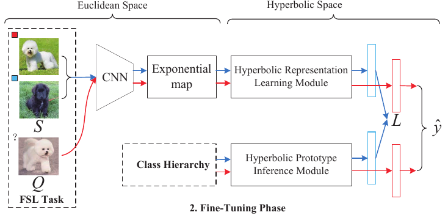
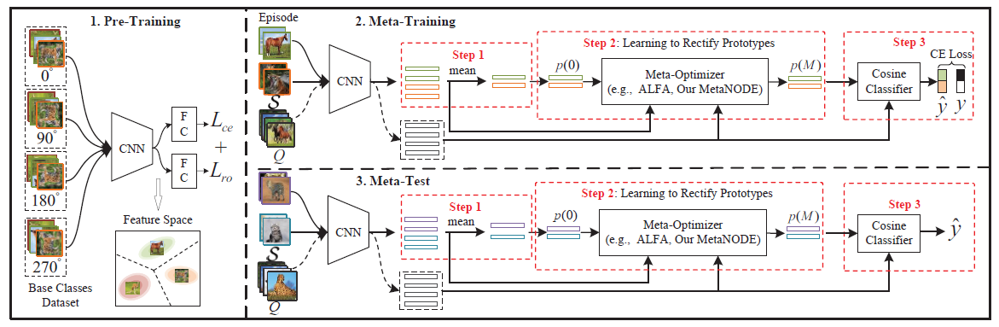
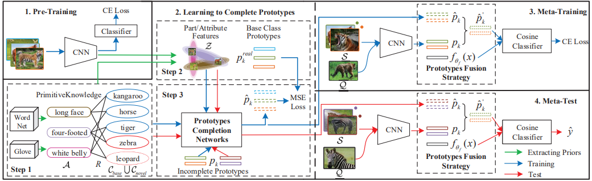
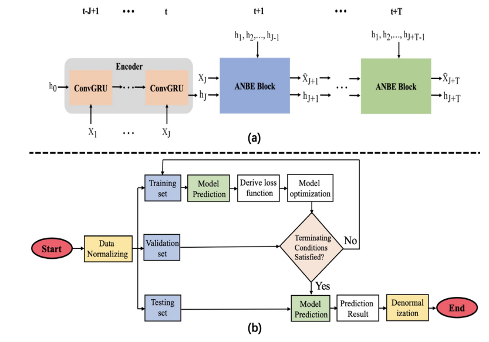
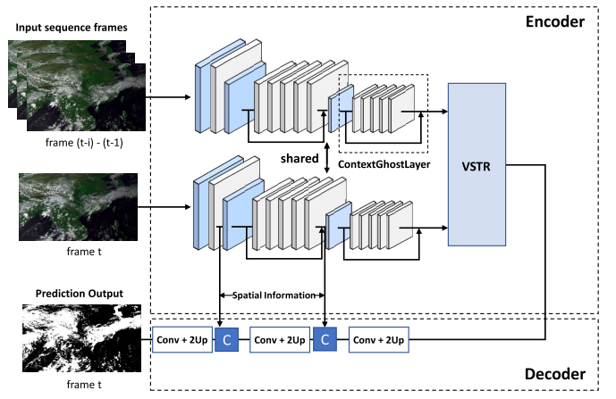
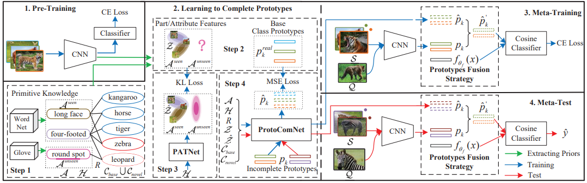
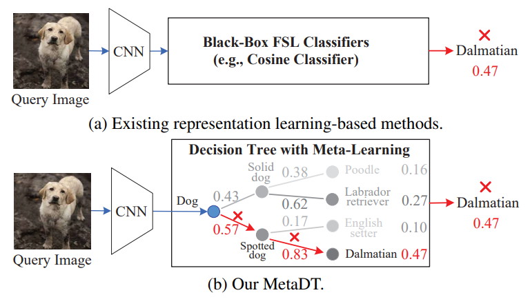
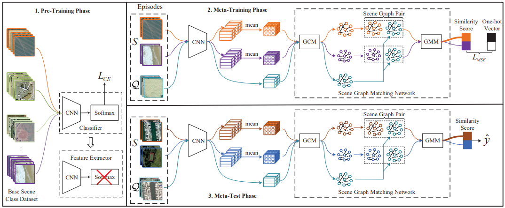
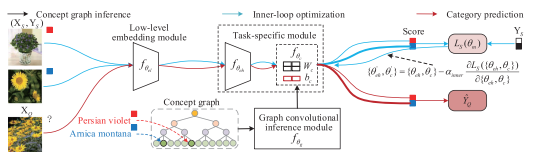

Songlei Wang 王松磊
PhD student
Harbin Institute of Technology, Shenzhen (HITSZ),
Shenzhen, Guangdong, China, 518055
Email: songlei.wang@outlook.com

Songlei Wang 王松磊PhD student
Harbin Institute of Technology, Shenzhen (HITSZ),
|
|

|
MetaDiff: Meta-Learning with Conditional Diffusion for Few-Shot Learning. Baoquan Zhang, Demin Yu. |
|
|
MetaDiff: Meta-Learning with Conditional Diffusion for Few-Shot Learning. Baoquan Zhang, Chuyao Luo, Demin Yu, Xutao Li, Huiwei Lin, Yunming Ye, and Bowen Zhang. Thirty-Sixth AAAI Conference on Artificial Intelligence ( AAAI ), 2024. (CCF-A). [arXiv] [PDF] |
|  | PCR: Proxy-based Contrastive Replay for Online Class-Incremental Continual Learning.[PDF][arXiv][Code] Huiwei Lin, Baoquan Zhang, Shanshan Feng, Xutao Li, Yunming Ye*. IEEE Conference on Computer Vision and Pattern Recognition ( CVPR ), 2023. (CCF-A) |
|  | Hyperbolic Knowledge Transfer with Class Hierarchy for Few-Shot Learning.[PDF][arXiv][Code] Baoquan Zhang, Hao Jiang, Shanshan Feng, Xutao Li, Yunming Ye*, Rui Ye. The 31st International Joint Conference on Artificial Intelligence ( IJCAI ), 2022. (CCF-A) |
|  | MetaNODE: Prototype Optimization as a Neural ODE for Few-Shot Learning.[PDF][arXiv][Code] Baoquan Zhang, Xutao Li*, Shanshan Feng, Yunming Ye*, Rui Ye. Thirty-Sixth AAAI Conference on Artificial Intelligence ( AAAI ), 2022. (CCF-A) |
|  | Prototype Completion with Primitive Knowledge for Few-Shot Learning.[PDF][arXiv][Code] Baoquan Zhang, Xutao Li*, Yunming Ye*, Zhichao Huang, Lisai Zhang. IEEE Conference on Computer Vision and Pattern Recognition ( CVPR ), 2021. (CCF-A) |
|  | PEPNet: A barotropic primitive equations-based network for wind speed prediction. Rui Ye, Baoquan Zhang*, Xutao Li, Yunming Ye. Neural Networks (NN), 2023. [PDF] |
|  | TRCDNet: A Transformer Network for Video Cloud Detection. Chen Luo, Shanshan Feng, Yingling Quan, Yunming Ye, Xutao Li, Yong Xu, Baoquan Zhang, Zhihao Chen. IEEE Transactions on Geoscience and Remote Sensing (TGRS), 2023. [PDF] |
|  | Prototype Completion for Few-Shot Learning. Baoquan Zhang, Xutao Li*, Yunming Ye*, Shanshan Feng. IEEE Transactions on Pattern Analysis and Machine Intelligence (TPAMI), 2023. [arXiv] [PDF] |
|  | MetaDT: Meta Decision Tree for Interpretable Few-Shot Learning. Baoquan Zhang, Hao Jiang, Xutao Li, Shanshan Feng, Yunming Ye*, Chen Luo, Rui Ye. IEEE Transactions on Circuits and Systems for Video Technology (TCSVT), 2022. [arXiv] [PDF] |
|  | SGMNet: Scene Graph Matching Network for Few-Shot Remote Sensing Scene Classification. Baoquan Zhang, Shanshan Feng, Xutao Li, Yunming Ye*, Rui Ye. IEEE Transactions on Geoscience and Remote Sensing (TGRS), 2022. [arXiv] [PDF](SCI, IF=8.125, CCF-B) |
|  | Learn to Abstract via Concept Graph for Weakly-Supervised Few-Shot Learning. Baoquan Zhang, Ka-Cheong Leung, Xutao Li, Yunming Ye*. Pattern Recognition ( PR ), 2021, accepted. [arXiv] [PDF](SCI, IF=8.518, CCF-B) |
|
|
DynamicNet: A time-variant ODE network for multi-step wind speed prediction. Rui Ye, Xutao Li, Yunming Ye*, Baoquan Zhang. Neural Networks ( NN ), 2022, accepted. [PDF](SCI, IF=8.05, CCF-B) |
|
|
ECDNet: A Bilateral Lightweight Cloud Detection Network for Remote Sensing Images. Chen Luo, Shanshan Feng, Xutao Li, Yunming Ye*, Baoquan Zhang, Zhihao Chen, YingLing Quan. Pattern Recognition ( PR ), 2022, accepted. [PDF](SCI, IF=8.518, CCF-B) |